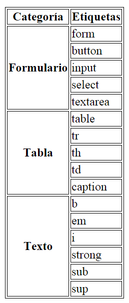

Debes crear una página web que tenga el mismo aspecto que la siguiente imagen:
Nota:en el código base que se te proporciona vas a encontrar una etiqueta nueva, la etiqueta "style". Esta etiqueta permite introducir instrucciones de CSS (Cascading Style Sheets) en una página web. CSS se emplea para definir la presentación visual de una página web y se explica en la segunda parte de este curso. Las instrucciones que se han incluido tienen como objetivo que la tabla y las celdas de la tabla se muestren con un borde. Esto también se podría haber logrado con el atributo border de HTML, pero es mejor utilizar siempre CSS para todo lo relacionado con la presentación de una página web.
| Categoría | Etiquetas |
|---|---|
| Formulario | form |
| button | |
| input | |
| select | |
| textarea | |
| Tabla | table |
| tr | |
| th | |
| td | |
| caption | |
| Texto | b |
| em | |
| i | |
| strong | |
| sub | |
| sup |